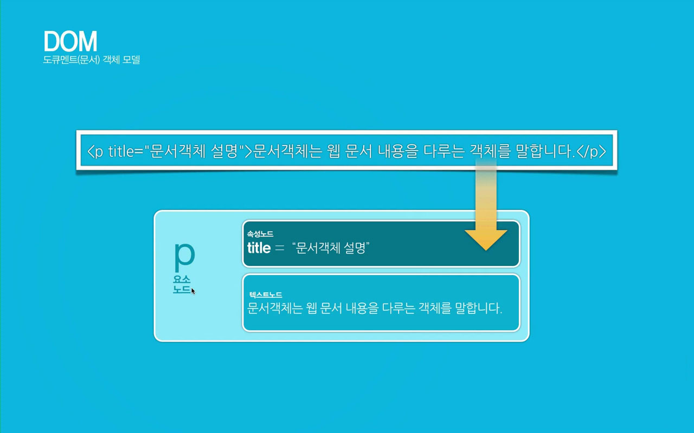
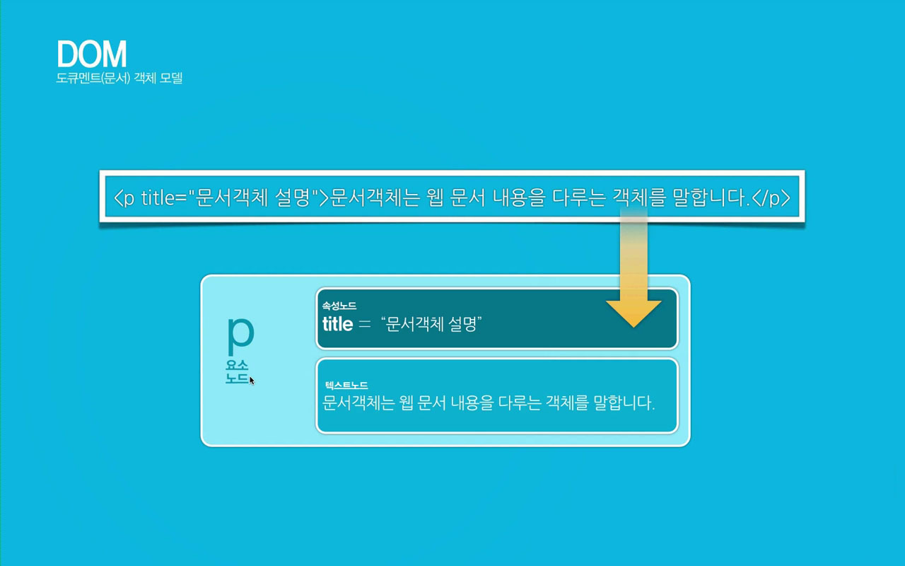

내장객체의 종류
javascript에서 내장객체는 미리 정해진 규정에 따라 사용하도록 만들어진 객체이다.
- 내장객체의 종류
- 문서객체 - document
- 브라우저 객체 - window
- 날짜 객체 - date
- 수학객체 - math
- 배열객체 - array
- 문자열객체 - string
- 함수객체 - function
- 기타...
문서객체모델 (DOM, document object model) p.240
DOM 이란? 넒은 의미로는 웹 브라우저가 HTML 태그를 인식하는 방법이고,
좁은 의미로는 웹 문서 안에 있는 객체들의 집합니다.
web browser(크롬, 사파리, 파이어폭스, 오페라, 익스플로러, 엣지, 모바일 브라우저) 마다 DOM 구현이 호환되지 않아서 W3C에서 DOM에 대한 표준규칙을 작성하였다.
DOM TREE 구조의 이해
DOM은 node==tag들의 집합이라고 할 수 있으며, DOM의 노드에는 요소노드, 속성노드, 텍스트노드로 구성되어있다.
노드는 DOM의 구조를 이루는 최소단위이며, 이 노드들의 집합체가 DOM 이라고 할 수 있다.


 

document 객체의 속성들
- domain - 현재 문서가 있는 서버의 도메인 이름
- title - 현재 문서의 제목
- bgColor - 문서의 배경색
- fgColor - 문서의 글자색
- linkColor - 문서의 링크 글자색
- alinkColor - 링크를 클릭하였을 때 글자색
- vlinkColor - 방문했던 링크의 글자색
- anchors - 문서의 anchor들의 배열
- cookie - 쿠키에 대한 정보
- url - 문서의 url주소
document 객체의 메소드 종류들
- open(); - 데이터를 보낼 준비
- close(); - 문서에 데이터 출력을 마무리함
- clear(); - 브라우저에서 문서를 지움
- write(); - 문서의 내용을 출력함
- writeln(); - 문서의 줄(line) 바꾸기를 포함하여 데이터를 출력함.
실습 1 . 현재 작성중인 문서의 title 정보와 url주소 알아보기
실습 2 . 버튼을 클릭하면 문서안에 글자색, 배경색 변경하기
실습 3 . 다크모드 버튼을 만들고 배경 어둡게, 희색글자 다시 클릭하면 배경 흰색, 글자' 검 정 나오게 하기'